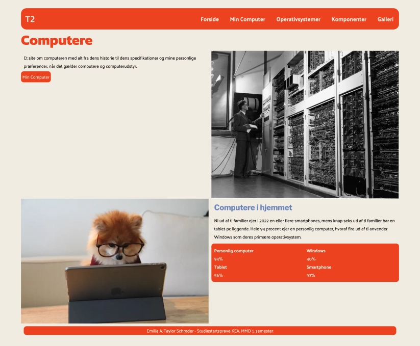

I Tema 2 blev jeg introduceret til de mest anvendte redskaber i en multimediedesign uddannelsen. Temaet fokuserede på grundlæggende faglige begreber inden for design af digitale brugergrænseflader, indholdsproduktion og kommunikation. Forløbet afsluttede med studiestartsprøven, hvor jeg skulle skabe en responsiv hjemmeside, baseret på udleveret tekst, billeder, wireframes, farver og typografi.
Jeg fik indsigt i designkonventioner og hvordan man skaber intuitive brugergrænseflader ved hjælp af gestaltprincipper, wireframes og styletiles. Derudover har jeg arbejdet med fonte, tekstopsætning og filformater som WebP for at sikre bedre teknisk optimering af digitale løsninger.
På den tekniske side har jeg lært at kode i VScode og anvendt CSS-grid, flex og media queries til at opbygge responsive hjemmesider med struktur. Jeg har også fået styr på korrekt mappestruktur og brugen af FileZilla til filhåndtering, hvilket sikrer en organiseret proces.
Temaet blev afsluttet med studiestartsprøven, hvor jeg arbejdede ud fra udleveret materiale. Her fik jeg en dybere forståelse for layoutdiagrammer og wireframes, hvor jeg lærte vigtigheden af "mobile-first"-tilgangen. Dette sikrer, at designet er optimeret til alle skærmstørrelser og bliver bygget korrekt fra start. Jeg husker tydeligt frustrationen ved at forstå grid og aflæsning af layoutdiagrammer; det er vildt at se tilbage på, hvor meget jeg egentlig har lært på så kort tid.
Dette tema har været fundamentalt for min forståelse af, hvordan en multimediedesigners arbejdsproces forløber fra idé til færdigt produkt.